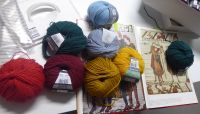
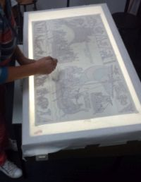

.jpg)
Tapijt van Vlaardingen
In 2018 werd gevierd dat de Slag bij Vlaardingen 1000 jaar daarvoor plaatsvond. Bij de archeologische werkgroep Helinium ontstond het idee om in navolging van het Tapijt van Bayeux, een tapijt te maken over de Slag bij Vlaardingen. Via Facebook en de lokale pers is in het voorjaar van 2017 een oproep gedaan om mee doen aan het project. Er reageerden zo’n 60 personen, waaruit een kopgroep is gevormd die een projectplan heeft opgesteld. De kopgroep koos het soort linnen, de wolsoort en de kleuren. De illustraties woorden met behulp van een lichtbak op het linnen met potlood overgebracht. Er is contact gezocht met KADE40, centrum voor kunst- en cultuureducatie te Vlaardingen, om het project te realiseren. Er was ruimte nodig en ook moesten er financiële middelen gevonden worden. Daarbij heeft KADE40 ons geholpen.
Uitgangspunt en inspiratiebron is het Tapijt van Bayeux. In het Archeologisch en Bouwhistorisch Depot van de gemeente Vlaardingen bevonden zich vier panelen over de Slag bij Vlaardingen en de periode vlak erna. Met deze vier panelen zijn we begonnen. De eerste steek werd gezet op 9 november 2017 bij KADE40. Iedere deelnemer moet voordat er aan de panelen op het Tapijt gewerkt mag worden eerst een proeflapje maken om de steken te oefenen, want de gebruikte Bayeux steek is een onbekende steek. Het borduren vond gedurende vier dagdelen per week plaats op de zolder van KADE40 aan de Westhavenkade te Vlaardingen. Soms werden tijdens evenementen borduursessies extern gehouden, bijvoorbeeld in Museum Vlaardingen. Het project kent ook een sociale component. Het borduren van het Tapijt is een groepsaangelegenheid. De deelneemsters kwamen voor een groot deel om te borduren, maar door regelmatig te vertellen over de slag en door het betrekken van de groep bij diverse Vlaardingen 1018 evenementen werd de kennis van historie vergroot. Om publiek tijdens evenementen te trekken, werd het project “Wild Borduren” opgezet. Zo kon men ook een steek op het Tapijt zetten zonder zich bij de borduurgroep aan te sluiten.
In eerste instantie wilden we het oorspronkelijke tapijt van Bayeux zo goed mogelijk benaderen: schapenwol, originele kleuren en vlaslinnen. Maar er bleken problemen te zijn. Schapenwol was moeilijk verkrijgbaar en bleek niet sterk genoeg. We hoopten digitale bestanden eenvoudig zou op het linnen te kunnen printen, maar dat bleek onmogelijk. Wat de kleuren betreft, we gebruiken acht kleuren: een compromis tussen de vele kleuren van John Rabou en het Tapijt van Bayeux. We gebruiken moderne wol (die is sterk en altijd verkrijgbaar) en Italiaans linnen van 19 draden per cm. De wol bestaat uit drie draden die eerst uit elkaar worden gehaald om later weer samengevoegd te worden tot twee of drie draden.


De gebruikte steken zijn die van het Tapijt van Bayeux: de steelsteek en de ingestoken stikstreek om de contourlijnen te maken. De contouren worden dan ingekleurd met vuldraad met erover heen een spandraad. Door de vulling per blok dwars op elkaar te plaatsen komt er beweging in de figuren.
Toen de zes meter van de slag bij Vlaardingen voltooid waren, besloten de borduursters door te gaan en de “héle” geschiedenis van Vlaardingen te gaan borduren.
Zij vroegen Rabou om ook de platen voor dit vervolg te maken. Nu wordt er gewerkt aan de periode ervoor: van de laatste ijstijd van 12.000 jaar geleden teo het jaar 1000.
Er zijn taferelen van de drooggevallen Noordzee met mammoeten en neushoorns, een boerderij uit de Vlaardingencultuur van ongeveer 3000 jaar voor Chr., de Krabbeplasman uit
de bronstijd, een boerderij uit de ijzertijd, scènes uit de romijnse tijd en tot slot Heribaldus die hier het christendom verkondigde.
Eerst maakt de illustrator een tekening. De tekening wordt op ware grootte gedrukt. Deze versiewordt op transparant papier overtrokken en vervolgens metbehulp van een lichtbak met de hand op het linnenover gezet. Dan wordt hij met de originele Bayeusteek geborduurd. We gebruiken de steelsteek en de ingestoken stikstreek om de contourlijnen te maken. De steken zijn eenvoudig te leren. Vervolgens worden de contouren ingekleurd met vuldraad met eroverheen een spandraad. Door de vulling per blok op elkaar te plaatsen komt er beweging in de figuren; de paarden gaan draven, de zeilen gaan bol staan.
Het borduurwerk word gedaan door een grote groep enthouste vrijwilligers. Voordat men kan beginnen met borduren aan het paneel zelf, wordt er eerst een proeflapje gemaakt om de techniek onder de knie te krijgen.
Het borduren geschiedt op vier dagdelenper week op de tweede etage van de bibliotheek aan de Waalstraat. Er wordt geborduurd op maandagavond, dinsdagmorgen en op donderdag,'s morgens en 's middags.
Belangstelling? Kom eens langs!